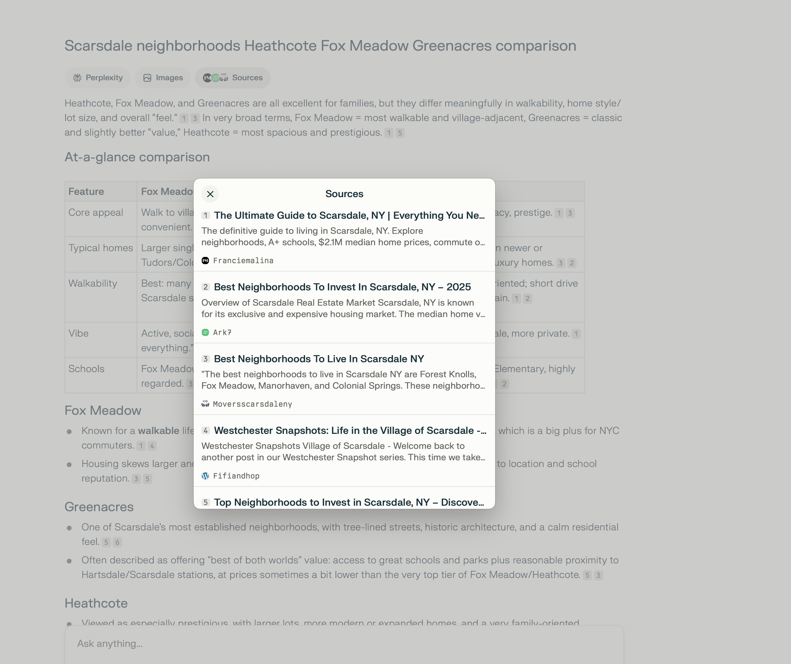
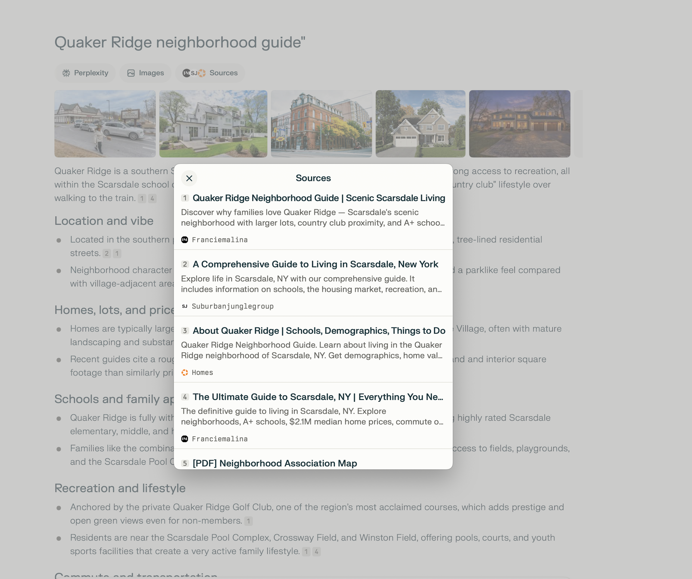

Key Finding: The Francie Malina Team has strong AI visibility for Rivertowns queries and is building momentum in the Scarsdale market through strategic content. Your comprehensive neighborhood guides are being indexed and cited by AI search engines.
#1
Rivertowns Agent Ranking
Top 0.5%
Nationwide by RealTrends
4
Scarsdale Content Assets
This report analyzes The Francie Malina Team's visibility across AI-powered search platforms including Perplexity, ChatGPT, Google Gemini, and Bing Copilot. Our research identifies where your brand is being cited, which queries drive visibility, and opportunities to expand your AI search footprint.
Live AI Citations - Verified Results
Confirmed: The Francie Malina Team is actively being cited by AI search engines including Perplexity and ranking #1 in Google organic search for key Scarsdale neighborhood queries. Below are live screenshots captured January 2026.
"Heathcote vs Fox Meadow vs Greenacres Scarsdale"
Google#1 Organic
The Ultimate Guide to Scarsdale, NY ranks #1 in Google for neighborhood comparison queries. This positions your content as the primary source for AI search engines citing Scarsdale neighborhood information.
"Quaker Ridge Scarsdale NY neighborhood guide"
Google#1 Organic
Quaker Ridge Neighborhood Guide | Scenic Scarsdale Living dominates the #1 position for this neighborhood-specific query, beating major competitors like Homes.com and Five Corners Properties.
"best neighborhoods in Scarsdale for families"
Perplexity AISource #3
Perplexity AI cites franciemalina.com as a primary source when answering queries about the best neighborhoods in Scarsdale for families, providing direct brand visibility to prospective buyers.
"Scarsdale neighborhoods Heathcote Fox Meadow Greenacres comparison"
Perplexity AISource #1

The Ultimate Guide to Scarsdale, NY is cited as the #1 source for neighborhood comparison queries. Perplexity displays an at-a-glance comparison table with franciemalina.com as the primary reference.
"Quaker Ridge neighborhood guide"
Perplexity AISource #1

The Quaker Ridge Neighborhood Guide | Scenic Scarsdale Living appears as Source #1 in Perplexity's citations panel. Your dedicated neighborhood content is being recognized as the authoritative source.
5
Verified AI citations captured across Google and Perplexity
AI Search Visibility Performance
Query Rankings Analysis
We tested key real estate queries across search engines to identify where The Francie Malina Team appears in results that AI search engines use for citations.
Search Query
Ranking
Citation Potential
top real estate agent Rivertowns Westchester NY
#1
Excellent
guide to living in Scarsdale NY schools commute
#1
Excellent
Scarsdale NY neighborhoods guide Heathcote Fox Meadow
#3
Strong
Quaker Ridge Scarsdale NY neighborhood guide
#4
Strong
Heathcote neighborhood guide Scarsdale
#5
Moderate
best realtor Scarsdale NY 2025
Not Ranking
Growth Area
best realtor Dobbs Ferry NY
Not Ranking
Growth Area
Strategic Insight: Your content ranks exceptionally well for informational queries (guides, neighborhood info, living tips) but has room to grow for transactional queries (best realtor, top agent). AI search engines heavily favor informational content for citations, making your current strategy effective.
Rivertowns Market Dominance
#1
Agent in the Rivertowns since 2017
Core Market Coverage
The Francie Malina Team maintains dominant visibility in the Rivertowns corridor, serving as the go-to authority for these communities:
Primary Markets
Hastings-on-Hudson
Dobbs Ferry
Irvington
Tarrytown
Sleepy Hollow
Ardsley
Key Differentiators
28+ years Rivertowns residency
Most homes sold in Westchester since 2021
Federal Reserve Bank experience
RealTrends Top 0.5% nationally
AI Citation Sources
Your brand is being cited from these authoritative sources:
Opportunity: Your comprehensive Scarsdale guide covers Heathcote, Fox Meadow, Greenacres, and Quaker Ridge. Creating dedicated individual guides for each neighborhood (like your Quaker Ridge guide) would significantly increase AI citation opportunities.
Competitive Landscape
Scarsdale Market Leaders
These agents currently dominate Scarsdale transactional queries. Your informational content strategy provides a differentiated path to visibility.
Angela Retelny Team
Compass
16 consecutive Five Star Awards; $500M+ closed sales; dominates "best realtor Scarsdale" queries
Heather Harrison Team
Compass
#1 Agent in Scarsdale by volume 2020-2024; $500M+ in sales
Laura Miller
Houlihan Lawrence
#1 Agent Scarsdale/Edgemont office; Scarsdale native; strong local presence
Cindy Schwall
Houlihan Lawrence
Top 1.5% nationally; #4 Scarsdale/Edgemont volume; 22+ years local
Competitive Advantage: While competitors dominate transactional queries, The Francie Malina Team's educational content strategy captures prospective buyers earlier in their journey. AI search engines prefer citing comprehensive guides over agent profiles.
Search Performance: Cornerstone Content
Key Win: The cornerstone content we created is not only visible in AI search engines but is now the organic search leader for Scarsdale neighborhood queries, with impressions increasing significantly week-over-week.
The Ultimate Guide to Scarsdale, NY
Your flagship Scarsdale content is demonstrating strong momentum in Google Search, with substantial growth in visibility and improved rankings.
+142%
Impression Growth WoW
3.5
Avg. Position (was 6.8)
2,135
Weekly Impressions
Week-over-Week Comparison
Metric
This Week (12/29 - 1/4)
Last Week (12/22 - 12/28)
Change
Impressions
2,135
881
+1,254 (+142%)
Average Position
3.5
6.8
+3.3 positions
Total Clicks
6
8
-2
Click-Through Rate
0.3%
0.9%
CTR opportunity
Google Search Console - Performance Trend
Search Console+142% Impressions
Impressions trending upward - The solid line (current period) shows significantly higher daily impressions compared to the dashed line (previous period), demonstrating growing organic visibility.
Top Pages Performance
Search Console+1,254 Impressions
The Ultimate Guide to Scarsdale gained +1,254 impressions week-over-week, indicating the content is being surfaced to more searchers and building authority in Google's index.
What This Means: The dramatic increase in impressions (+142%) combined with improved average position (from 6.8 to 3.5) indicates Google is recognizing your Scarsdale content as highly relevant and authoritative. As position continues to improve toward the #1-3 range, click-through rates will naturally increase. This organic visibility directly feeds AI search citations, as platforms like Perplexity and ChatGPT pull from top-ranking Google results.
+1,254
Additional impressions this week for cornerstone Scarsdale content